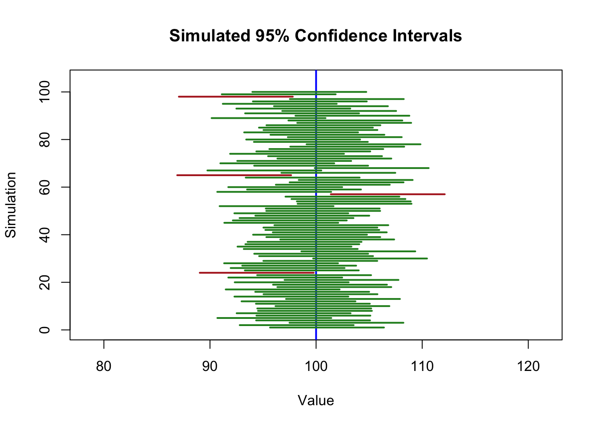
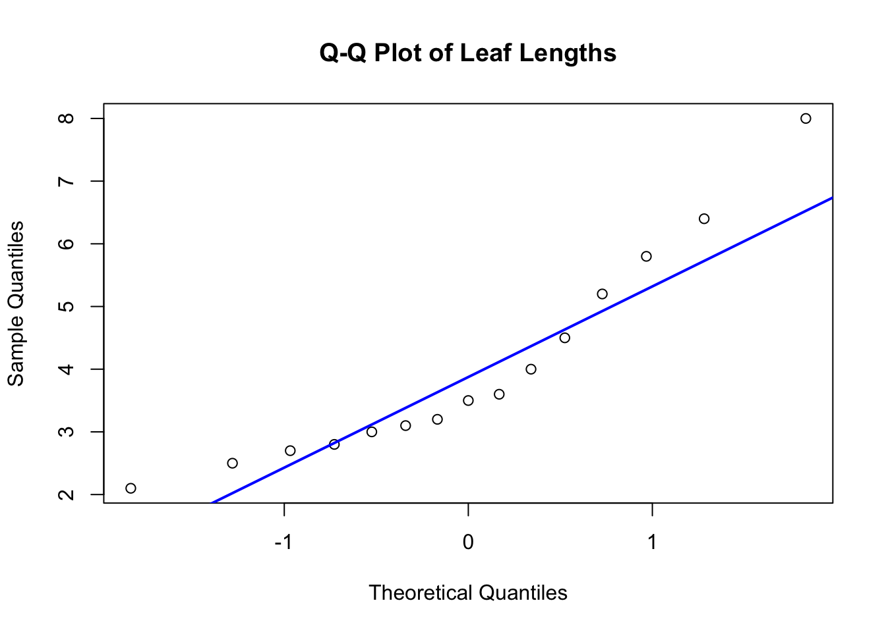

Chapter 9 Confidence Intervals
9.1 Introduction
The value of a statistic (see Definition 8.2) gives some information about the underlying parameter. The statistic doesn't, in general, equal the parameter. We would like to provide a secondary piece of information about how 'far' they are from each other. In this sense, a statistic is an approximation and the important question is: how good is that approximation?
In the previous chapter, we studied the sampling distribution of a statistic, which describes how the statistic is a random variable. Tying these ideas together, any statement about how 'far' the statistic is will involve uncertainty. In a certain sense and with a certain probability, we will be able to say the statistic is close to the parameter without ever knowing the value of the parameter. This will be known as a confidence interval.
A confidence interval provides a range of plausible values for a population parameter based on the observed value of a statistic and our understanding of its sampling distribution.
In this chapter, we develop confidence intervals for several common parameters: a population mean (\(\mu\)), a population proportion (\(p\)), a specific scenario known as 'matched pairs', and a variance (\(\sigma^2\)), in each case assuming that the data arise from a random sample of size \(n\).
9.2 Motivation and Pivots
Suppose we are interested in estimating the population mean \(\mu\) of a Normally distributed variable, and we assume that the population standard deviation \(\sigma\) is known. That is, we assume:
\[ X_1, X_2, \dots, X_n \overset{\text{iid}}{\sim} N(\mu, \sigma^2) \] (recall that iid means `independently and identically distributed'; see Definition 8.1). From Proposition 8.3, we know that the sample mean, \(\bar{X}\), has a sampling distribution:
\[ \bar{X} \sim N \left( \mu, \frac{\sigma^2}{n} \right) \]
This means that the standardized version of \(\bar{X}\):
\[ \frac{\bar{X} - \mu}{\sigma / \sqrt{n}} \sim N(0, 1) \]
We begin with a probability statement: can we 'bracket' the values of this standardized statistic? To do so, we will introduce a fundamental quantity \(\alpha\) which will always correspond to an error. For now, just think of it as a small probability, e.g. \(\alpha = 0.05\):
\[ P\left( -z_{\alpha/2} \leq \frac{\bar{X} - \mu}{\sigma / \sqrt{n}} \leq z_{\alpha/2} \right) = 1-\alpha \]
where \(z_{\alpha/2}\) is defined in Section 6.5.1. For example, for \(\alpha = 0.05\) then \(z_{\alpha/2} = z_{.025} = 1.959964 \approx 1.96\) (Though they might seem obscure, these values will occur regularly in our discussion of confidence intervals).
Rearrange this inequality so that \(\mu\) is in the 'middle':
\[ P\left( \bar{X} - z_{\alpha/2} \cdot \frac{\sigma}{\sqrt{n}} \leq \mu \leq \bar{X} + z_{\alpha/2} \cdot \frac{\sigma}{\sqrt{n}} \right) = 1-\alpha \]
Conclusion: If \(\bar{X}\) has a Normal sampling distribution and we as well know the population standard deviation \(\sigma\) then we can answer the question: 'how far is \(\bar{X}\) from \(\mu\)?': it is within an interval centered around \(\bar{X}\) with a certain probability. In this case, that interval is called a (1-)100% confidence interval and looks like:
\[ \left[ \, \bar{X} \, - \, z_{\alpha/2} \cdot \frac{\sigma}{\sqrt{n}} \, , \, \bar{X} \, + \, z_{\alpha/2} \cdot \frac{\sigma}{\sqrt{n}} \, \right] = \, \bar{X} \, \pm \, z_{\alpha/2} \cdot \frac{\sigma}{\sqrt{n}} \, = \, \bar{X} \, \pm M \]
where \(M = z_{\alpha/2} \cdot \frac{\sigma}{\sqrt{n}}\) is called the margin of error.
Though this is the essence of confidence intervals, we will need to extend these results in a number of useful directions:
- What if we don't know the population standard deviation \(\sigma\)?
- What if we are interested in a scientific question that involves a parameter other than \(\mu\)?
- What happens when the sampling distribution isn't normal?
- How do we accurately interpret these confidence intervals?
The random variable \(\frac{\bar{X} - \mu}{\sigma / \sqrt{n}} \sim N(0,1)\) played a special role. Though the definition of depends on \(\mu\), the distribution does not (\(N(0,1)\) doesn't depend on \(\mu\)). Other similar random variables will be key ingredients to other confidence intervals. These standardized statistics go by the special name pivot.
Definition 9.1 A pivot is a quantity that:
- Depends on both the unknown population parameter (e.g., \(\mu\), \(p\), \(\sigma^2\)) and the statistic (e.g. \(\bar{X}\), \(\hat{p}\), \(S\))
- Has a sampling distribution that does not depend on unknown parameters
In other words, a pivot is a function of the data and the parameter whose sampling distribution is fully known, regardless of the parameter's value. They can be used to construct confidence intervals.
Once a pivot has been identified, we can use it to derive a confidence interval by following a general procedure:
Using a Pivot to Construct a Confidence Interval
- Write a probability statement for the pivot, using its known distribution. For example, for a 95% confidence level, this might take the form: \[ P(a \leq \text{pivot} \leq b) = (1-\alpha) \] where \(a\) and \(b\) are constants that need to be determined
- Rearrange the inequality so that the unknown parameter is in the 'middle' of the probability statement with some margin of error \(M\):
\[ P(\text{statistic} - M \leq \text{parameter} \leq \text{statistic} + M) = (1-\alpha) \]
- Interpret the resulting inequality as a confidence interval, using the form: \[ \text{CI} = \left[\text{statistic} - M, \, \text{statistic} + M\right] \]
This procedure yields an interval that captures the true parameter value with a specified level of confidence (e.g., 95%) across repeated samples.
The key step in this process is identifying an appropriate pivot. This is often done by standardizing a sample statistic in a way that removes any unknown parameters from the distribution. Some common pivots used:
For a population mean \(\mu\) (when \(\sigma\) is known):
\[ \frac{\bar{X} - \mu}{\sigma / \sqrt{n}} \; \sim N(0, 1) \]For a population mean \(\mu\) (when \(\sigma\) is unknown):
\[ \frac{\bar{X} - \mu}{S / \sqrt{n}} \; \sim t_{n-1} \] (See Section 6.7 for the definition of the T distribution)For a population proportion \(p\): \[ \frac{\hat{p} - p}{\sqrt{p(1 - p)/n}} \; \sim N(0, 1) \]
For a population variance \(\sigma^2\):
\[ \frac{(n - 1) S^2}{\sigma^2} \; \sim \chi^2_{n - 1} \] (See Section 4.5.3 for the definition of the Chi-Squared distribution)
In the sections that follow, we apply this approach to develop confidence intervals for means, proportions, matched pairs, and variances. We will also consider computational-based alternatives using the bootstrap.
In the following sections, we present five common confidence intervals used in practice:
- A confidence interval for a population mean \(\mu\) when the population standard deviation \(\sigma\) is known
- A confidence interval for a population mean \(\mu\) when the population standard deviation \(\sigma\) is unknown
- A confidence interval for a population proportion \(p\)
- A confidence interval for the matched paired difference \(\mu_D\)
- A confidence interval for a population variance \(\sigma^2\) using the Chi-Squared distribution.
Each of these confidence intervals follows the same general construction principle but requires a different pivot and corresponding sampling distribution. For each case, we will describe the relevant setup, derive the interval using the pivot method, state a formal proposition, and work through a simple example.
9.3 Confidence Interval for the Population Mean \(\mu\)
In the introduction to this chapter, we assumed that the sampling distribution of \(\bar{X}\) is exactly normal and that we know the population variance \(\sigma^2\). These restrictions aren't necessary as long as we make some adjustments.
When forming confidence intervals for \(\mu\), there are two important sub-cases:
- The population standard deviation \(\sigma\) is known (Section 9.3.2)
- The population standard deviation \(\sigma\) is unknown (Section 9.3.3).
Additionally, suppose we are planning to make a simple random sample of \(n\) observations from a population: \(X_1, X_2, \dots, X_n\). We must assume (and/or check) that at least one of the following two conditions hold:
9.3.1 Sampling Distribution conditions
- \(X_1, X_2, \dots, X_n \overset{\text{iid}}{\sim} N(\mu, \sigma^2)\) no matter the \(n\)
- \(n\) is large enough for the Central Limit Theorem (See Theorem 8.1). For the purposes of this book, we can consider \(n \geq 30\) to be large enough.
In the following two sections, we will assume that at least one of these two conditions holds.
9.3.2 When \(\sigma\) is known (Using the Normal Distribution)
Starting with the now familiar pivot \(\frac{\bar{X} - \mu}{\sigma / \sqrt{n}} \sim N(0,1)\), let \(\alpha\) be a small, positive number. Then we can define a \((1-\alpha)\) 100% confidence interval for \(\mu\) by manipulating this probability statement:
\[ P\left( -z_{\alpha/2} \leq \frac{\bar{X} - \mu}{\sigma / \sqrt{n}} \leq z_{\alpha/2} \right) = 1-\alpha \]
Rearranging this probability to put \(\mu\) in the 'middle' yields \((1-\alpha)\times 100\%\) confidence interval. Note that in the expression (and in fact every single time \(\alpha\) is used), \(\alpha\) encodes the likelihood of making a mistake.
Proposition 9.1 Let \(X_1, X_2, \dots, X_n\) meet either one of the conditions in Section 9.3.1. Then a \((1 - \alpha) \times 100\%\) confidence interval for \(\mu\) when \(\sigma\) is known is given by:
\[ \left[ \, \bar{X} \pm z_{\alpha/2} \cdot \frac{\sigma}{\sqrt{n}} \, \right] \]
In this expression \(\bar{X}\), and hence \(\left[ \, \bar{X} \pm z_{\alpha/2} \cdot \frac{\sigma}{\sqrt{n}} \, \right]\), are random variables. This represents the distribution of possible values we might observe after running our experiment. Hence, it is true that the probability that \(\mu\) is in the interval is \(1-\alpha\).
Crucially, after running the experiment, we represent this notationally as \(\left[ \, \bar{x} \pm z_{\alpha/2} \cdot \frac{\sigma}{\sqrt{n}} \, \right]\). It is no longer sensible to interpret this interval probabilistically. We will return to this important but subtle distinction in Section 9.7.
Example 9.1 A nutritionist wants to estimate the average sodium content of a brand of soup. She plans to select a random sample of \(n = 12\) cans and record the sodium contents (in mg):
Assuming the sodium contents are Normally distributed (and hence one of the conditions in Section 9.3 is satisfied), and that the population standard deviation is known to be 11 mg, construct a 98% confidence interval for the population mean sodium content \(\mu\).
Solution: Because \(\sigma\) is known, we use the confidence interval from Proposition 9.1:
\[ \bar{X} \pm z_{.01} \cdot \frac{11}{\sqrt{12}} \] where we use \(\alpha = .02\) and hence \(\alpha/2 = .01\). For this confidence interval, the margin of error is \(M = 7.387\).
alpha <- .02
n <- 12
sigma <- 11
z_alpha2 <- qnorm(1-alpha/2)
margin <- z_alpha2*sigma/sqrt(n)
margin## [1] 7.387147Back to the problem statement: Now, she actually conducts her experiment and collects a simple random sample:
Use this sample to produce the requested observed confidence interval.
Back to the solution: Now, we can complete the calculation:
## [1] 813.03 827.80We are 98% confident that the true mean sodium content is between 813.03 mg and 827.8 mg.
The assumption that we know the population standard deviation is very restrictive. It is much more common to need to estimate the population standard deviation using the sample standard deviation \(S\).
####THIS APPEARED SOMEHOW, DON"T KNOW WHERE IT GOES
xbar <- 498.6
sigma <- 1.1
n <- 30
alpha <- .05
z_alpha2 <- qnorm(1-alpha/2)
# Compute margin of error and CI
margin <- z_alpha2 * sigma / sqrt(n)
ci <- c(xbar - margin, xbar + margin)
round(ci, 4)## [1] 498.2064 498.99369.3.3 When \(\sigma\) is unknown (Using the t Distribution)
There are many real-world contexts in which we wish to estimate the population mean \(\mu\) but the population standard deviation is unknown. In such cases, we can no longer use the \(\frac{\bar{X} - \mu}{\sigma / \sqrt{n}}\) as it is no longer a pivot. Instead, we use the very similar looking (but fundamentally different) \[ \frac{\bar{X} - \mu}{S / \sqrt{n}} \; \sim t_{n-1} \]
instead, where \(S\) is the sample standard deviation:
\[ S = \sqrt{ \frac{1}{n-1} \sum_{i=1}^n (X_i - \bar{X})^2 } \] We can use this standardized statistic as a pivot (recall Definition 9.1) whose sampling distribution does not depend on \(\mu\) nor \(\sigma\). Again assuming at least one of the conditions in Section 9.3 is satisfied,
\[ P\left( -t_{\alpha/2, \, n-1} \leq \frac{\bar{X} - \mu}{S / \sqrt{n}} \leq t_{\alpha/2, \, n-1} \right) = 1 - \alpha \] where \(t_{\alpha/2,n-1}\) is defined in Section 6.7. Rearranging to put \(\mu\) in the middle yields the \((1-\alpha)\times 100\%\) confidence interval:
\[ \left[ \, \bar{X} \pm t_{\alpha/2, \, n-1} \cdot \frac{S}{\sqrt{n}} \, \right] \]
Proposition 9.2 Let \(X_1, X_2, \dots, X_n\) meet either one of the conditions in Section 9.3.1. Then a \((1 - \alpha) \times 100\%\) confidence interval for \(\mu\) when \(\sigma\) is unknown (and hence \(S\) is used instead) is given by:
\[ \bar{X} \pm t_{\alpha/2, \, n-1} \cdot \frac{S}{\sqrt{n}} \]
Again, after running the experiment, we represent this notationally as \(\left[ \, \bar{x} \pm t_{\alpha/2,n-1} \cdot \frac{s}{\sqrt{n}} \, \right]\), where the lower case letters \(\bar{x}\) and \(s\) represent fixed, observed numbers, not random variables.
Let's look at this by revisiting Example 9.1 but without the assumption that we known \(\sigma\):
Example 9.2 A nutritionist wants to estimate the average sodium content of a brand of soup. She plans to select a random sample of \(n = 12\) cans and record the sodium contents (in mg):
Assuming the sodium contents are Normally distributed (and hence one of the conditions in Section 9.3 is satisfied), she wishes to construct a 98% confidence interval for the population mean sodium content \(\mu\) without assuming she knowns the population standard deviation.
Solution: The confidence interval from Proposition 9.2 looks like:
\[ \bar{X} \pm t_{.01,11} \cdot \frac{S}{\sqrt{12}} \] where we use \(\alpha = .02\) and hence \(\alpha/2 = .01\).
## [1] 2.718079Back to the problem statement: Now, she actually conducts her experiment and collects a simple random sample:
Use this sample to produce the requested observed confidence interval.
Back to the solution: Now, we can complete the calculation:
n <- length(x)
xbar <- mean(x)
s <- sd(x)
margin <- t_alpha2 * s/sqrt(n)
ci <- c(xbar - margin, xbar + margin)
round(ci, 2)## [1] 811.81 829.02We are 98% confident that the true mean sodium content is between 811.81 mg and 829.02 mg.
Note that in the above situation when we have the actual observations (that is, the vector x), we can use the very useful function t.test:
##
## One Sample t-test
##
## data: x
## t = 259.15, df = 11, p-value < 2.2e-16
## alternative hypothesis: true mean is not equal to 0
## 98 percent confidence interval:
## 811.8119 829.0215
## sample estimates:
## mean of x
## 820.4167For now, ignore the parts of this output other than the 98% Confidence Interval. We will return to that next chapter when we discuss Hypothesis Testing (Chapter 10).
9.4 Confidence Interval for Matched Pairs
An important and powerful type of experiment is one in which two measurements are naturally matched or paired. Often, this comes about by re-measuring the same unit from the sample twice. These two measurements are then subtracted from each other. This difference gives us a lot of information as it allows us to control for various unit-specific properties. This is best described by a series of examples.
A key structural support for a building has a series of corresponding bolts on the north and south side of the column. These corresponding bolts need to be tightened the same amount, on average, as each other. We can draw a sample of these corresponding bolt locations and to a safety check.
We want to see which of two colors of fabric, bright yellow and bright red, is more visible for children's swimsuits. We have a child wear one color and get into a large pool. A trained lifeguard is then timed in how long it takes to spot the child. Then, the same child changes into the other color and we time again how long it takes to spot the child.
We want to know how effective STAT 211 is in training students in probability and statistics. We draw a sample of students and administer a pre-test. Then, 3 months after the class is over, we administer a post-test to these same students and compare the difference.
In each of these scenarios, we leverage to our advantage the fact that corresponding locations or the same person controls for unit-specific variability. For instance, some students might have taken AP Statistics recently and they do relatively well on the pre-test. Other students have never taken a statistics class before. In either case, we are comparing the change in each student's understanding.
We will label one of the measurements we made of a SRS of \(n\) units
\[ X_1, X_2, \dots, X_{n} \]
and the other measurements as
\[ Y_1, Y_2, \dots, Y_{n} \] Crucially, each \(X_i\) and \(Y_i\) are matched (e.g. one the pre-test score and the other is the post-test score for the \(i^{th}\) student).
As we are interested in the difference, we immediately subtract them to form
\[ D_1 = X_1 - Y_1, D_2 = X_2 - Y_2, \dots, D_n = X_n - Y_n \]
We want to make a statement about the population mean of this difference: \(\mu_D\). To do so, we will naturally use the sample mean difference:
\[ \bar{D} = \frac{1}{n}\sum_{i=1}^n D_i \] As an aside, this also equals \(\bar{D} = \bar{X} - \bar{Y}\), giving us an alternative way to compute the sample mean difference. As per usual, \(\bar{D} \approx \mu_D\), but we need to leverage the sampling distribution of \(\bar{D}\) to make this approximation more precise.
Fortunately, we have already done all the heavy lifting at this point. We can refer to Section 9.3.3 and apply the exact same methodology:
\[ \frac{\bar{D} - \mu_D}{S_D / \sqrt{n}} \; \sim t_{n-1} \]
where \(S_D\) is the sample standard deviation:
\[ S_D = \sqrt{ \frac{1}{n-1} \sum_{i=1}^n (D_i - \bar{D})^2 } \] ** Note: ** As the measurements are on the same unit they tend to be correlated (recall Section 7.5). This becomes crucial when comparing matched pairs to the 'two population' tests we will cover later in Section 11.1.
Putting this all together:
Proposition 9.3 Let \(X_1, X_2, \dots, X_n\) and \(Y_1, Y_2, \ldots, Y_n\) be measurements that are naturally paired with \(n \geq 30\). Then a \((1 - \alpha) \times 100\%\) confidence interval for \(\mu_D\) is given by:
\[ \bar{D} \pm t_{\alpha/2, \, n-1} \cdot \frac{S_D}{\sqrt{n}} \]
Let's look at an example
Example 9.3 Suppose a manufacturer produces bottles of olive oil and wants to know: which of two bottle designs might lead to a higher sales price? To help decide, this company will draw a sample of potential customers and show them each bottle design and ask: how much would you pay for this olive oil? Of course, some people naturally would pay more or less, but by asking the same person twice we have controlled for this variation. With a random sample of \(n = 30\) customers, we want to construct a 95% confidence interval for the difference in the average price in dollars.
Solution: For a 95% confidence interval, \(t_{.025, 29}\) = 2.0452 and therefore:
\[ \left[ \, \bar{D} \, - \, 2.0452 \cdot \frac{S_D}{\sqrt{30}} \, , \, \bar{D} \, + \, 2.0452 \cdot \frac{S_D}{\sqrt{30}} \, \right] \]
Back to the problem statement: Now, we actually conduct our experiment and collect a simple random sample \(n = 30\) customers. We find for design 1, a sample average of $4.98 and for design 2 a sample average of $4.23. Hence, \(\overline{d}\) = $0.75. As well, after finding the differences \(d_i\), we find that the sample standard deviation of the difference is \(s_d\) = $0.9.
Back to the solution: Now, we can complete the calculation. Our margin of error for our 95% CI is: 2.0452*0.9/5.4772256 = 0.5718327
Thus, a 95% confidence interval is 0.75 \(\pm\) 0.5718327; we are 95% confident that the average difference of price, \(\mu_D\) is between $0.1781673 and $1.3218327.
The above method is usable when we are only given the summary statistics, e.g. the sample averages. There is another, sleeker way if we have the actual measurements, again using the very useful function t.test:
x = c(884,806,885,873,813,835,818,884,896,873,828,845,898,810,884,818,834,
823,890,878,813,804,822,818,809,829,829,873,807,813)
y = c(901,885,834,908,903,825,857,833,892,824,855,837,843,849,907,848,851,
886,864,900,869,864,877,842,914,915,826,870,821,885)
t.test(x, y, paired = TRUE, conf.level=1-alpha)##
## Paired t-test
##
## data: x and y
## t = -2.894, df = 29, p-value = 0.007151
## alternative hypothesis: true mean difference is not equal to 0
## 98 percent confidence interval:
## -42.751673 -3.448327
## sample estimates:
## mean difference
## -23.19.5 Confidence Interval for a Population Proportion (Using the Normal Distribution)
There are many real-world contexts in which we may wish to estimate a population proportion \(p\). For example, \(p\) might represent the proportion of voters who support a candidate, the proportion of patients who recover after treatment, or the proportion of products that are defective. When the sample size is sufficiently large, we can construct a confidence interval for \(p\) using the Normal approximation to the Binomial distribution.
Suppose we take a simple random sample of size \(n\) from a population, and observe \(x\) "successes" (e.g., individuals who possess the characteristic of interest). The sample proportion is:
\[ \hat{p} = \frac{X}{n} \]
If \(n\) is "large enough" (typically checked using rules of thumb such as \(n \hat{p} \geq 10\) and \(n(1 - \hat{p}) \geq 10\)), then the sampling distribution of \(\hat{p}\) is approximately Normal:
\[ \hat{p} \;\dot{\sim}\; N\left(p, \frac{p(1 - p)}{n} \right) \]
To construct a confidence interval, we again use the pivot method. The appropriate pivot here is:
\[ Z = \frac{\hat{p} - p}{\sqrt{ \frac{p(1 - p)}{n} }} \quad \dot{\sim} N(0, 1) \]
However, since \(p\) is unknown, we substitute \(\hat{p}\) into the denominator:
\[ Z \approx \frac{\hat{p} - p}{\sqrt{ \frac{\hat{p}(1 - \hat{p})}{n} }} \]
This leads to the following approximate \((1 - \alpha) \times 100\%\) confidence interval for \(p\):
\[ \left[ \, \hat{p} \pm z_{\alpha/2} \cdot \sqrt{ \frac{\hat{p}(1 - \hat{p})}{n} } \, \right] \]
Proposition 9.4 Let \(x\) denote the number of "successes" observed in a random sample of size \(n\), and let \(\hat{p} = x / n\) be the sample proportion. If \(n\) is large enough for the Normal approximation to hold, then a \((1 - \alpha) \times 100\%\) confidence interval for the population proportion \(p\) is:
\[ \left[ \, \hat{p} \pm z_{\alpha/2} \cdot \sqrt{ \frac{\hat{p}(1 - \hat{p})}{n} } \, \right] \]
where \(z_{\alpha/2}\) is the critical value from the standard Normal distribution.
Example 9.4 A marketing team conducts a survey to estimate the proportion of customers who are satisfied with a new product. Out of a random sample of \(n = 150\) customers, \(x = 117\) report that they are satisfied. Construct a 95% confidence interval for the true proportion \(p\) of satisfied customers.
Solution: The sample proportion is:
## [1] 117## [1] 33Because \(n \hat{p} = 117\) and \(n(1 - \hat{p}) = 33\) are both greater than 10, the Normal approximation is appropriate.
We compute the margin of error and confidence interval:
z_alpha <- qnorm(0.975)
se <- sqrt(phat * (1 - phat) / n)
margin <- z_alpha * se
ci <- c(phat - margin, phat + margin)
round(ci, 3)## [1] 0.714 0.846We are 95% confident that the true proportion of satisfied customers is between 0.71 and 0.85.
Just like using t.test we can use prop.test:
##
## 1-sample proportions test without continuity correction
##
## data: x out of n, null probability 0.5
## X-squared = 47.04, df = 1, p-value = 6.955e-12
## alternative hypothesis: true p is not equal to 0.5
## 95 percent confidence interval:
## 0.7071769 0.8388398
## sample estimates:
## p
## 0.78Editorial comment: the correct = FALSE argument has been chosen to match the previous output and for simplicity. The correction, when used, helps the normal approximating via the Central Limit Theorem. Outside the confines of this class, you should drop this argument, which by default is correct = TRUE.
9.6 Confidence Interval for a Population Variance (Using the \(\chi^2\) Distribution)
In quality control, finance, biology, and many other areas, we may wish to make inference not just about a population mean or proportion, but also about a population variance \(\sigma^2\). For example, a company might wish to ensure that the variability in product weight or fill volume remains below a certain threshold.
Suppose we draw a simple random sample of size \(n\) from a Normally distributed population:
\[ X_1, X_2, \dots, X_n \overset{\text{iid}}{\sim} N(\mu, \sigma^2) \]
Let \(S^2\) denote the sample variance. While we do not go into the details here, it turns out that the sampling distribution of \(S^2\), when sampling from a Normal population, is directly related to the chi-squared distribution introduced in Section 4.5.3:
\[ \frac{(n - 1) S^2}{\sigma^2} \sim \chi^2_{n - 1} \]
This expression defines a pivot — it involves both the unknown parameter \(\sigma^2\) and the sample data, but has a known distribution that does not depend on \(\sigma^2\). Using the pivot method, we write:
\[ P\left( \chi^2_{1 - \alpha/2, \; n - 1} \leq \frac{(n - 1) S^2}{\sigma^2} \leq \chi^2_{\alpha/2, \; n - 1} \right) = 1 - \alpha \]
Inverting the inequality gives a confidence interval for \(\sigma^2\):
\[ \left[ \, \frac{(n - 1) S^2}{\chi^2_{\alpha/2, \; n - 1}}, \; \frac{(n - 1) S^2}{\chi^2_{1 - \alpha/2, \; n - 1}} \, \right] \]
We can also obtain a confidence interval for the population standard deviation \(\sigma\) by taking square roots of the interval endpoints.
Proposition 9.5 Let \(X_1, X_2, \dots, X_n \overset{\text{iid}}{\sim} N(\mu, \sigma^2)\) and let \(S^2\) denote the sample variance. Then a \((1 - \alpha) \times 100\%\) confidence interval for \(\sigma^2\) is:
\[ \left[ \, \frac{(n - 1) S^2}{\chi^2_{\alpha/2, \; n - 1}}, \; \frac{(n - 1) S^2}{\chi^2_{1 - \alpha/2, \; n - 1}} \, \right] \]
Here, \(\chi^2_{\alpha/2, \; n - 1}\) and \(\chi^2_{1 - \alpha/2, \; n - 1}\) denote critical values from the \(\chi^2\) distribution with \(n - 1\) degrees of freedom.
Example 9.5 A chemist measures the concentration (in ppm) of a chemical compound in \(n = 8\) randomly selected samples. The results (in ppm) are:
Assuming the concentrations follow a Normal distribution, construct a 95% confidence interval for the population variance \(\sigma^2\).
Solution: We use the chi-squared-based confidence interval formula:
alpha <- 0.05
df <- n - 1
chi2_lower <- qchisq(1 - alpha / 2, df)
chi2_upper <- qchisq(alpha / 2, df)
lower <- (df * s2) / chi2_lower
upper <- (df * s2) / chi2_upper
round(c(lower, upper), 2)## [1] 0.02 0.17We are 95% confident that the true population variance \(\sigma^2\) lies between 0.02 and 0.17 ppm².
9.7 Interpreting a Confidence Interval
You might have wondered: why do we call them 'confidence intervals' instead of 'probability intervals'? In this section, we will address the importance of this distinction.
Regardless of the type of confidence interval, it is necessary to interpret it appropriately. Unfortunately, interpreting a confidence interval is more subtle and nuanced than it appears. The crux is the following: before the experiment the statistic is a random variable (representing all the values we could possible observe) and hence we can think of the interval probabilistically. However, after the experiment, we get one, fixed value for the statistic (representing the value we actually did observe) and hence there is no remaining randomness nor probability.
For an analogy, imagine you are going to drive from College Station to Austin to meet your friends for a concert. They ask you what time you think you are going to get there and you say 'I'll probably be there around 3pm'. You give this approximate answer because they is a lot of uncertainty (traffic, construction, getting lost, can't find wallet, ...). Note the use of the word probably as in there is some probability involved. Now, let's say you arrive at 3:12. It would no longer make sense to say 'I'll probably arrive at 3:12'; instead you would say 'I arrived at 3:12'. There is no remaining randomness and hence no sense in appealing to probability.
The key idea in how to correctly interpret confidence intervals is that the probability comes from the process of creating the interval, not the specific interval you end up computing. This idea is very similar to how we defined and explored the idea of a sampling distribution (See Definition 8.3):
Interpretation (in plain language):
If we were to repeat the study many times and compute a 95% confidence interval each time, then 95% of those intervals would contain the true parameter value. In practice, we only conduct the study once and obtain a single interval. We do not know whether that one interval contains the parameter, but we do know that the method we used has a strong track record: it works 95% of the time.
Hence we have a degree of confidence in the interval. How much, exactly? Well: 95%.
Let's look at this more carefully by revisiting an earlier example:
Example 9.6 A nutritionist wants to estimate the average sodium content of a brand of soup. She plans to select a random sample of \(n = 12\) cans and record the sodium contents (in mg):
Assuming the sodium contents are Normally distributed (and hence one of the conditions in Section 9.3 is satisfied), and that the population standard deviation is known to be 11 mg, construct a 98% confidence interval for the population mean sodium content \(\mu\).
Solution: Because \(\sigma\) is known, we use the confidence interval from Proposition 9.1. As well, \(z_{.01} = 2.3263\). So, the margin is \(M = 7.387\). Hence the procedure for this confidence interval will be:
\[ \bar{X} \pm 7.387 \] At this point, we can interpret this interval probabilistically as there is still randomness (given by the sampling distribution of \(\bar{X}\)). In fact, we can say 'the probability that the interval \([\bar{X} - 7.387,\bar{X} + 7.387]\) contains \(\mu\) is .98'. Note the use of the capital letter \(\bar{X}\).
Back to the problem statement: Now, she actually conducts her experiment and collects a simple random sample:
We compute a specific realization of the above interval and find \(\bar{x} = 820.4167\) (note the use of the lower case \(\bar{x}\)), which makes the observed interval \(820.4167 \pm 7.387 = [813.0297, 827.8037]\). Crucially, these are fixed, non random numbers! It no longer makes sense to interpret this interval using probability.
9.7.1 A Deeper Look at the Idea of Confidence
To develop a deeper understanding of what the 'confidence' in a confidence interval means, we now conduct a simulation study. In any simulation study, we know the true value and examine how successful a procedure is. We’ll assume that we know the true population mean and population standard deviation and we will repeatedly sample from that population. For each sample, we will compute a 95% confidence interval and observe how often those intervals contain the known population mean (again, it is known as we are doing a simulation study. It will never be known in practice).
Specifically, we simulate the following scenario:
- Population: Normal with mean \(\mu = 100\) and standard deviation \(\sigma = 15\)
- Sample size: \(n = 30\)
- Number of simulations: \(1000\)
- Confidence level: 95%
set.seed(42)
# Simulation parameters
mu <- 100
sigma <- 15
n <- 30
num_sims <- 1000
z_alpha2 <- qnorm(0.975)
# Simulate CI endpoints
sample_means <- replicate(num_sims, mean(rnorm(n, mean = mu, sd = sigma)))
margin_error <- z_alpha2 * sigma / sqrt(n)
ci_lower <- sample_means - margin_error
ci_upper <- sample_means + margin_error
contains_mu <- (ci_lower <= mu) & (ci_upper >= mu)In the R code, the ci_lower and ci_upper objects are vectors containing the lower bounds and upper bounds, respectively, of the 1000 simulated 95% confidence intervals, and contains_mu is a vector of boolean (TRUE or FALSE) values indicating whether each confidence interval contains \(\mu\). Below, we display the first 100 intervals as horizontal line segments, using green to indicate intervals that contain the true mean \(\mu = 100\) and red for those that do not.

Figure 9.1: Subset of simulated 95% CIs. Each line segment represents a 95% CI from one simulated sample. Green means that the population mean is contained in the interval, while red means that it is not.
Out of the first 100 simulated samples, four resulted in 95% confidence intervals that did not contain \(\mu\). Recall our interpretation from the start of this chapter, that 95% of all 95% confidence intervals are expected to contain their target parameter value. In the "long run", then, we expect that 95% of the intervals that we would obtain via the above simulation strategy would contain \(\mu\) (and, hence, 5% would not contain \(\mu\)). We see 96% coverage out of the first 100 simulated samples, just by chance. If we instead examine all 1000 simulated samples, the coverage is 94.3%; the more simulations we run, the closer the coverage would get to 95%.
## contains_mu
## FALSE TRUE
## 60 9409.8 Finding the Sample Size (\(n\)) for a Particular Confidence Interval
Referring to the margin \(M\), a given confidence interval has width \(2M\). This width is important as a correctly constructed confidence interval can still be useless in practice if it is too wide. This can be phrased in the classic way as accuracy and precision. An accurate statement is one that is correct. A precise statement is one is very narrow in scope.
It is very possible to create a confidence interval that is accurate but uselessly imprecise. For example, the interval \((-\infty, \infty)\) will definitely contain the population mean (and hence is accurate). However it is woefully imprecise. The confidence interval \([.999999,1.0000001]\) is very precise, but is very likely inaccurate.
This is analogous to you being lost in the Sam Houston National Forest. You call for help and ask where you are. The person responds: on planet Earth. This is an accurate, but uselessly imprecise, answer. Or, the person can respond: 394 FM 1375 West, New Waverly, TX 77358. This is a very precise, but inaccurate, response.
Precision is influenced by several factors:
- The confidence level: Higher confidence levels require wider intervals to maintain the same level of coverage.
- The variability in the data: More variability, which means a larger \(\sigma\), leads to wider intervals.
- The sample size: Larger sample sizes produce more precise (i.e., narrower) intervals.
Key Idea: Increasing the sample size reduces the standard error, which in turn narrows the confidence interval, improving precision.
It is often useful to determine how large a sample is needed to achieve a desired level of precision. For instance, suppose we want our 95% confidence interval for a population mean to be no wider than a specified amount.
Recall that, in this context, a (1-\(\alpha\))100% confidence interval for \(\mu\) takes the form:
\[ \bar{X} \pm z_{\alpha/2} \cdot \frac{\sigma}{\sqrt{n}} \]
This interval has a total width of:
\[ \text{width} = w = 2 \cdot z_{\alpha/2} \cdot \frac{\sigma}{\sqrt{n}} \]
Solving for \(n\), we find that to achieve a desired maximum width \(w\):
\[ n = \left( \frac{2 \cdot z_{\alpha/2} \cdot \sigma}{w} \right)^2 \] This will in general not be a whole number. Always round this value up to the next integer.
Example 9.7 Suppose a manufacturer produces bottles of olive oil labeled as containing 500 milliliters (ml). A quality control team takes a random sample of \(n = 30\) bottles and measures their contents. The team assumes that the bottle volume has a known population standard deviation \(\sigma = 1.1\) ml.
Construct a 95% confidence interval for the true mean volume \(\mu\) of oil per bottle.
Solution: Because the population distribution is Normal and \(\sigma\) is known, we can use Section 9.3.2. First, recall that the value \(z_{.025} \approx 1.96\). Hence, a 95% confidence interval for \(\mu\) looks like:
\[ \left[ \, \bar{X} \, - \, 1.96 \cdot \frac{1.1}{\sqrt{30}} \, , \, \bar{X} \, + \, 1.96 \cdot \frac{1.1}{\sqrt{30}} \, \right] = \, \bar{X} \, \pm \, 1.96 \cdot \frac{1.1}{\sqrt{30}} \, = \, \bar{X} \, \pm M \] with \(M = 1.96 \cdot \frac{1.1}{\sqrt{30}} = 0.3936299 \approx 0.394\) (note that you don't have to write all three versions each time; we are writing them all for emphasis).
Back to the problem statement: Suppose the manufacturer wants to ensure that future quality control samples yield a 95% confidence interval for the true mean volume \(\mu\) of olive oil with a total width no more than 1 ml. What sample size \(n\) is required?
Back to the solution: We use the formula for the required sample size to achieve a desired width \(w\) of a two-sided confidence interval:
\[ n = \left( \frac{2 \cdot z_{\alpha/2} \cdot \sigma}{w} \right)^2 \]
Here, \(\sigma = 1.1\), \(w = 1\), and for a 95% confidence level, \(z_{\alpha/2} = 1.96\):
z_alpha2 <- qnorm(0.975)
sigma <- 1.1
width <- 1
n_required <- (2 * z_alpha2 * sigma / width)^2
ceiling(n_required)## [1] 19So, the required sample size is: \(n = 19\) to ensure that the 95% confidence interval for the mean bottle volume is no wider than 1 ml. Note that this wouldn't be sufficient to activate the CLT so this would be a separate real-world consideration.
This kind of calculation is frequently used in the planning stages of a study. If a desired level of precision is known in advance, it can be used to determine how much data to collect. Note that the above illustration is specific to the context of a confidence interval for a population mean with a Normal population distribution and known population standard deviation. That said, a similar approach can be used to compute the sample size required for an arbitrary confidence interval for any parameter to be of specified width; the details of the calculation will depend on the specific context (what kind of population parameter are we targeting, what, if anything, do we know about the population distribution and population standard deviation, etc.).
9.9 Other Types of Intervals
In most of this chapter, we have focused on constructing confidence intervals for population parameters, such as a population mean or proportion. These intervals quantify our uncertainty about a fixed but unknown quantity. However, in some applications, we are interested in a different kind of uncertainty; for example:
- How much will a future observation vary from our sample?
- What interval will most of the population fall within?
For such questions, we turn to prediction intervals and tolerance intervals. These are not confidence intervals in the traditional sense, but they are constructed in similar ways. Both require additional assumptions (typically Normality), and each answers a different kind of practical question.
Below, we describe and illustrate each interval type using a shared context: measuring the tensile strength of a material from a Normally distributed population.
9.9.1 Prediction Intervals
A prediction interval gives a range in which we expect a future individual observation to fall, with a specified level of confidence. Unlike a confidence interval, which targets a population parameter, a prediction interval accounts for both sampling variability and individual variability.
Proposition 9.6 Let \(X_1, X_2, \ldots, X_n\) be a random sample from a Normal population with unknown mean \(\mu\) and unknown standard deviation \(\sigma\). Then, a \((1 - \alpha) \times 100\%\) prediction interval for a single future observation \(X_{\text{new}}\) is given by:
\[ \bar{X} \pm t_{\alpha/2, n-1} \cdot s \sqrt{1 + \frac{1}{n}} \] This interval accounts for both the variability in estimating \(\mu\) and the variability in a future observation.
Notice that the formula for a prediction interval closely resembles that of a confidence interval for the population mean. The only difference is the additional 1 inside the square root:
\[ \text{SE}_{\text{prediction}} = s \sqrt{1 + \frac{1}{n}} \quad \text{vs.} \quad \text{SE}_{\text{mean}} = s \sqrt{\frac{1}{n}} \]
This extra 1 accounts for the added uncertainty when predicting a single future observation rather than estimating a population parameter. In effect, the prediction interval must account not only for the variability in estimating the mean but also for the variability of the individual outcome itself. As a result, prediction intervals are always wider than corresponding confidence intervals for the mean, reflecting the fact that it is inherently harder to predict an individual value than to estimate an average.
Example 9.8 An engineer measures the tensile strength (in MPa) of a sample of \(n = 10\) steel rods, obtaining the following:
Assume the tensile strengths follow a Normal distribution. Construct a 95% prediction interval for the tensile strength of a future steel rod produced under similar conditions.
Solution:
n <- length(strength)
xbar <- mean(strength)
s <- sd(strength)
t_alpha2 <- qt(0.975, df = n - 1)
pred_se <- s * sqrt(1 + 1/n)
pred_int <- c(xbar - t_alpha2 * pred_se, xbar + t_alpha2 * pred_se)
round(pred_int, 1)## [1] 388.6 416.6We are 95% confident that a new draw from the distribution of steel rods will have tensile strength between 388.6 and 416.6 MPa.
9.9.2 Tolerance Intervals
A tolerance interval provides a range that is expected to capture a specified proportion of the population, with a specified level of confidence. Tolerance intervals are commonly used in quality control settings when we want to assert that, for instance, "at least 90% of all items fall within this range with 95% confidence."
Proposition 9.7 Let \(X_1, X_2, \ldots, X_n\) be a random sample from a Normal population with unknown mean \(\mu\) and unknown standard deviation \(\sigma\). A two-sided \((1 - \alpha)\) tolerance interval for the central \(P\) proportion of the population takes the form:
\[ \bar{x} \pm k \cdot s \]
where \(k\) is a constant chosen so that the interval contains at least a proportion \(P\) of the population with confidence \((1 - \alpha)\).
The value of \(k\) depends on the sample size \(n\), the desired content proportion \(P\), and the confidence level \((1 - \alpha)\). Tables and software are available to compute \(k\) for common choices of \(n\), \(P\), and \(\alpha\).
There is no closed-form analytical formula for the tolerance factor \(k\) because it must account for both sampling variability and the requirement to cover a specified proportion of the population with a given level of confidence. Unlike the \(t\)-based intervals used for means or predictions, the distribution of \(k\) does not follow a simple form and instead depends on more complex probability calculations. As a result, numerical approximation methods or pre-computed tables are used to obtain appropriate values of \(k\) for given combinations of \(n\), \(P\), and confidence level. In R, the normtol.int function in the tolerance package can be used to compute tolerance intervals of various types.
Example 9.9 Using the same sample of tensile strengths as in Example 9.8, construct a 95% tolerance interval that covers at least 90% of the population of steel rods.
Solution:
## Loading required package: tolerance## tolerance package, version 3.0.0, Released 2024-04-18
## This package is based upon work supported by the Chan Zuckerberg Initiative: Essential Open Source Software for Science (Grant No. 2020-255193).tol.int <- normtol.int(strength, alpha = 0.05, P = 0.90, side = 2, method = "HE")
round(c(tol.int$'2-sided.lower', tol.int$'2-sided.upper'), 1)## [1] 385.8 419.4We are 95% confident that at least 90% of all steel rods have tensile strength between 385.8 MPa and 419.4 MPa.
9.9.3 Bootstrap Confidence Intervals
In many real-world situations, the assumptions required to construct a confidence interval using traditional distributional methods (e.g., Normality or known variance) may not hold. Additionally, for complex statistics or estimators, it may be difficult or impossible to derive an appropriate pivot. In such cases, we can instead use resampling methods, such as the bootstrap, to approximate the sampling distribution of a statistic and construct a confidence interval.
The bootstrap is a powerful computational tool that estimates the variability of a statistic by repeatedly resampling (with replacement) from the observed data and recalculating the statistic for each resample. This empirical distribution of bootstrap statistics serves as a stand-in for the unknown sampling distribution.
In this section, we introduce the most basic and widely used approach to bootstrap confidence intervals—the percentile method—and discuss its benefits and drawbacks.
9.9.3.1 The Basic Bootstrap Percentile Method
The bootstrap percentile method constructs a confidence interval by directly taking percentiles from the empirical distribution of a statistic computed from bootstrap resamples. It is simple to implement and does not require distributional assumptions or derivation of a pivot.
Steps for Constructing a Bootstrap Percentile Confidence Interval
- Obtain a random sample of size \(n\) from the population. Compute the statistic of interest (e.g., mean, median, proportion) from the original sample.
- Resample with replacement from the original data to create many bootstrap samples (e.g., 1,000 or 10,000 resamples).
- Compute the statistic of interest for each bootstrap sample.
- Construct the interval by taking the appropriate percentiles (e.g., the 2.5th and 97.5th percentiles for a 95% CI) from the distribution of bootstrap statistics.
Example 9.10 A botanist measures the lengths (in cm) of 15 leaves from a particular species and obtains the following sample:
These data appear to come from a right-skewed distribution. If we were confident that our sample came from a Normal population, then we could apply our \(t\)-based method for constructing a confidence interval for the population mean.
To visually assess the Normality assumption, we can construct a Q-Q plot, as described in Section 6.6:

Figure 9.2: Q-Q plot for leaf length data. The departure from linearity suggests that the data may not follow a Normal distribution.
The plot shows a clear deviation from linearity, indicating that the Normal assumption may not be reasonable here. In such cases, a bootstrap confidence interval offers a useful alternative. Construct a 95% bootstrap percentile confidence interval for the population mean leaf length, using 10,000 resamples.
Solution:
set.seed(123)
n <- length(leaf)
B <- 10000
boot_means <- replicate(B, mean(sample(leaf, n, replace = TRUE)))
mean_ci <- quantile(boot_means, probs = c(0.025, 0.975))
round(mean_ci, 2)## 2.5% 97.5%
## 3.27 4.89We are 95% confident that the population mean leaf length lies between 3.27 and 4.89.
Note that, if we were interested in the median instead of the mean, we could simply replace mean() with median() in our bootstrap code:
boot_medians <- replicate(B, median(sample(leaf, n, replace = TRUE)))
median_ci <- quantile(boot_medians, probs = c(0.025, 0.975))
round(median_ci, 2)## 2.5% 97.5%
## 2.8 5.2This flexibility is a key strength of the bootstrap: it allows us to estimate confidence intervals for a wide variety of parameter types, even those for which standard formulas are not available.
There is also a popular R package boot that can perform the above bootstrap analysis (and many others) in a more standardized way. Below, we show how boot can be used to construct a bootstrap percentile confidence interval for mean leaf length:
library(boot)
# Define the statistic function: compute mean from given indices
mean_stat <- function(data, indices) {
mean(data[indices])
}
# Run bootstrap
set.seed(123)
boot_results <- boot(data = leaf, statistic = mean_stat, R = 10000)
# View percentile CI
boot.ci(boot_results, type = "perc")## BOOTSTRAP CONFIDENCE INTERVAL CALCULATIONS
## Based on 10000 bootstrap replicates
##
## CALL :
## boot.ci(boot.out = boot_results, type = "perc")
##
## Intervals :
## Level Percentile
## 95% ( 3.28, 4.88 )
## Calculations and Intervals on Original ScaleThis returns the 95% bootstrap percentile confidence interval for the mean. The argument type = "perc" tells boot.ci() to use the percentile method, which is equivalent to what we computed manually.
To compute a confidence interval for the median instead of the mean, we simply redefine the statistic function:
median_stat <- function(data, indices) {
median(data[indices])
}
boot_results_median <- boot(data = leaf, statistic = median_stat, R = 10000)
boot.ci(boot_results_median, type = "perc")## BOOTSTRAP CONFIDENCE INTERVAL CALCULATIONS
## Based on 10000 bootstrap replicates
##
## CALL :
## boot.ci(boot.out = boot_results_median, type = "perc")
##
## Intervals :
## Level Percentile
## 95% ( 2.8, 5.2 )
## Calculations and Intervals on Original ScaleThis approach makes it easy to estimate bootstrap CIs for a wide range of statistics without writing your own resampling code.
9.9.3.2 Advantages and Limitations
The bootstrap is an appealing method due to its generality and ease of use, but it is important to understand its strengths and weaknesses.
Advantages:
- Does not require assumptions about the population distribution.
- Useful when no pivot is available or when the statistic’s distribution is unknown or complex.
- Easy to implement using modern computing tools.
Limitations:
- Assumes that the sample is representative of the population; bootstrap results can be misleading for small or biased samples.
- Can perform poorly for statistics with skewed or highly discrete distributions, or for extreme quantiles.
- Some bootstrap intervals (e.g., percentile) may have less accurate coverage properties than traditional intervals in small samples.
There are more advanced bootstrap methods—such as the bias-corrected and accelerated (BCa) interval—that address some of these limitations, but the percentile method remains a popular starting point.